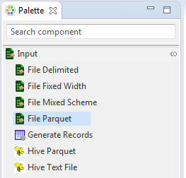
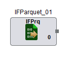

Input File Parquet
Input File Parquet as the name suggests accepts a parquet file as input source and is present under the Input category in the component palette.
This component is used to read a parquet file. It has a single output port.
The Input File Parquet component can be easily distinguished in the component palette.

An enlarged version of the same is depicted when dragged on the canvas.

For further reference click on the links below: